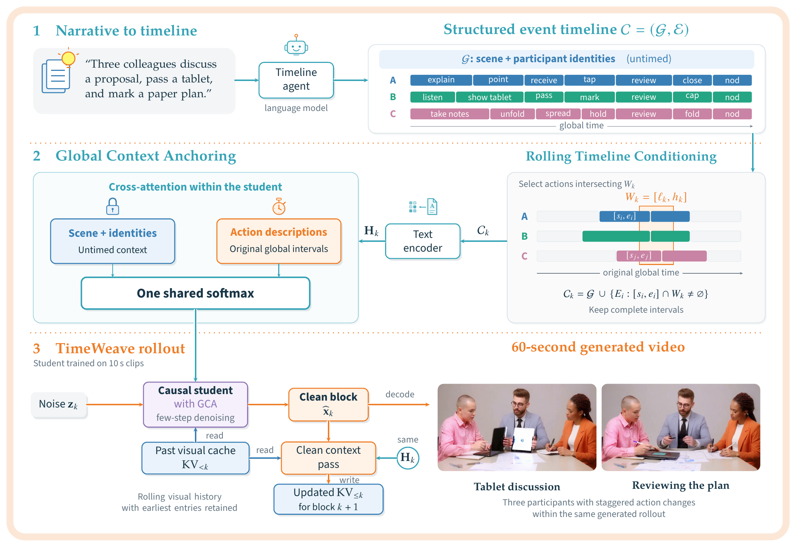

LONG VIDEO GENERATION
Global Time, Local BlocksGenerating Minute-Long Videos
from Action Schedules
TimeWeave generates long videos from action schedules, keeping actions on a global timeline while generating one local block at a time.
1Huazhong University of Science and Technology
2Centrum voor Wiskunde en Informatica (CWI) 3University of Trento
01 / VIDEO EXAMPLES
Watch the timeline unfold.
Twelve 30-second examples from our model.
Choose a scene, then press play.
Bicycle helmet
Unable to load the video. Open the video directly.
02 / SIDE-BY-SIDE
Comparison with other baselines
Four methods for each scene, shown in sync.
Inspect the actions, timing, and scene continuity.
Bicycle helmet
Each set uses the same scene, event schedule, and seed. Self-Forcing and LongLive use a timed single prompt; LongLive Interactive switches prompts during generation. Examples are qualitative selections.
Select a scene, then play all four videos together.
03 / METHOD
Global schedules. Local generation.
Rolling Timeline Conditioning selects actions that overlap the current block’s temporal window and preserves their original timestamps. Global Context Anchoring keeps scene and participant descriptions untimed, sharing attention with the scheduled actions throughout generation.

The paper evaluates minute-long rollouts. The gallery above contains the existing twelve 30-second qualitative comparisons; they are selected examples, not the complete evaluation set.
04 / CITATION
Cite this work
@misc{chen2026timeweave,
title={Global Time, Local Blocks: Generating Minute-Long Videos from Action Schedules},
author={Chen, Yang and Qu, Chengsong and Li, Runting and Zhou, Xuemei and Long, Teng and Hu, Vincent Tao},
year={2026},
howpublished={Research preprint},
url={https://vibe-hust.github.io/ontime_page/}
}TIMEWEAVE